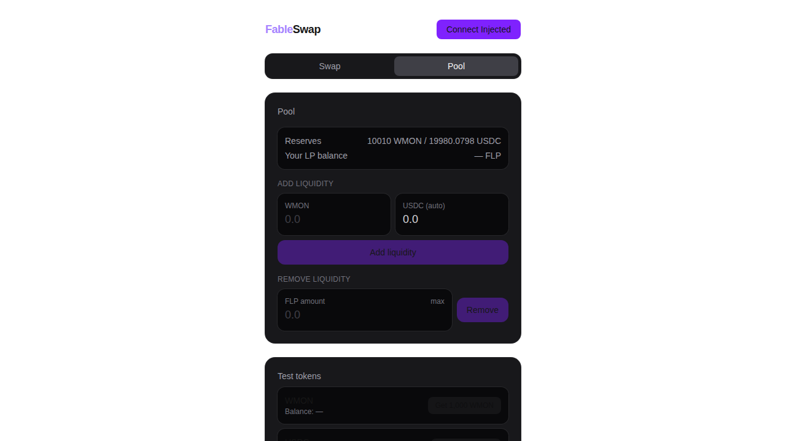
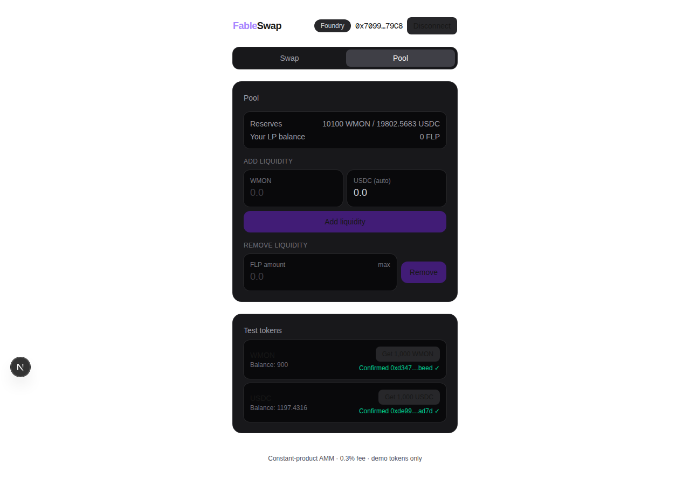

I asked Fable 5 to build a dex. Here’s how it went.

A few days ago I published the Gemma 4 12B test, where a free local model wrote a dapp and found zero of its own bugs. The obvious follow-up was to run the same test on a frontier model and keep the same score. So I asked Claude’s new Fable 5 to build me a dex, full stack, contracts to frontend, in one autonomous pass. It needed me exactly once across the whole build, to send 5 testnet MON to an address it generated for itself.
The Gemma test, with the same methodology and scoring: I asked Gemma 4 12B to create a dapp. Make no mistakes.
Same test, opposite end of the scale
My prompt was the same kind of one-liner I gave Gemma. Here it is in full, this is everything the model got from me up front:
You are claude fable 5, I want to measure your web3 dapp generation capabilities. How should we go about this? Usually I ask an agent to create a simple dex. Let’s plan first.
The first thing it did was go find my Gemma article and copy the methodology out of it (the same compile-test-deploy gauntlet, scored by how many times a human has to step in). Which means the scoring you’re about to read was partly designed by the thing being scored. Make of that what you will.
It asked me a few planning questions before starting. I told it to verify everything locally first and then deploy to Monad testnet, asked for the full stack, and turned down milestone check-ins. Those three answers, plus the gas later, are the complete list of things I typed for the rest of the build. It also set one constraint on itself that I liked: write the AMM from scratch instead of forking Uniswap V2, because a fork only proves you can copy. Then it went off and I watched. One model the whole way through, no subagents and no fallback to anything smaller.
The contracts compiled first try, and it debugged its own tests
The Solidity came back as a proper v2-style constant product AMM (factory, pair, router, two demo tokens), no OpenZeppelin, and it compiled clean on the first attempt. The security work showed up without me asking for any of it, a reentrancy lock and fee-adjusted k-check in the pair, slippage and deadline guards on every router entry point. The one that got me was the minimum-liquidity burn against the first-depositor inflation attack, because it also wrote a test that actually runs the attack and checks the attacker ends up owning 1 share out of 1001. Here it is, trimmed:
vm.startPrank(attacker);
router.addLiquidity(address(tokenA), address(tokenB), 1001, 1001, 0, 0, attacker, DEADLINE);
Pair p = Pair(factory.getPair(address(tokenA), address(tokenB)));
// Donate to inflate share price.
tokenA.transfer(address(p), 10_000e18);
tokenB.transfer(address(p), 10_000e18);
p.sync();
vm.stopPrank();
// The attacker holds 1 of 1001 total shares: >99.9% of the donation
// accrues to the locked dead shares, not the attacker.
assertEq(p.balanceOf(attacker), 1);
assertEq(p.totalSupply(), 1001);The comments are its own. I went looking for this pattern because it’s the kind of thing auditors bill for, and it was already in the test file with the attack spelled out.
The test suite is where the Gemma comparison gets interesting. First run: 18 of 20 green. With Gemma, every red test turned into me reading the trace and spelling out the cause. Here the model read its own failure output, worked out that both failures were bugs in the test fixtures (its attacker tried to donate more tokens than it had left after seeding the pool, and one test expected the k-check revert when an earlier input check fires first), fixed the tests, and left the contracts alone. The full suite is 21 tests including fuzz runs, all passing, and the contracts never changed after their first draft.
It read the library instead of dreaming it
Gemma’s failure mode was inventing APIs. Fable’s habit is checking them. wagmi 3 came out after most training data, and instead of writing imports from memory it grepped the actual .d.ts files in node_modules to confirm which hooks and connectors exist before using them. The frontend still wasn’t flawless, the type checker caught two config-level mistakes (the Next.js scaffold targets ES2017, which breaks BigInt literals, and wagmi narrows chain ids in a way its first attempt didn’t satisfy), but it found and fixed both from the compiler output. At one point its fix “didn’t work” because TypeScript’s incremental cache was serving stale errors, and it figured that out too instead of churning on correct code. That is precisely the trap the 12B fell into for three rounds.
It built its own way to click the buttons
My favorite part of the run. A headless agent can’t operate MetaMask, so it gave the app a dev-only mock wallet wired to an Anvil account, wrote a Playwright script, and drove its own UI through the whole swap flow like a user, reading the numbers off the screen as it went. The quote shown in the interface for 100 WMON over a 10,000/20,000 pool was 197.431606 USDC, which matches the constant-product formula to all six displayed decimals. The script passed on its first run.

The machine fought back a little (my fault, the box is a graveyard of old benchmark sessions 😭). A leftover Anvil from some previous run was still holding port 8545 with dirty nonces, so the first local deploy landed on wrong addresses, and ports 3000 through 3002 were busy too. It killed the stale node and moved its dev server to 3010 without any of that friction reaching me.
One human, one job: gas
For the testnet deploy it generated a fresh keypair, dropped the key in a gitignored .env, and asked me to fund the address. I sent 5 MON, which is the entire human contribution to this project. It deployed, seeded the pool, then verified the deployment the paranoid way: pulled 1,000 WMON from its own faucet contract and executed a real swap on testnet. 10 WMON in, 19.920139 USDC out, again exact against the formula. All five contracts came back exact_match on Monad’s Sourcify, and about 1.4 MON of the 5 got spent. The whole run, from that first prompt to verified contracts on the explorer, took about 25 minutes of wall clock.
Final score, same scale as last time. Gemma needed a human to name every bug before it could fix one. Fable’s sheet reads:
- contracts: compiled on the first attempt, never edited after their first draft
- tests: 18/20 on the first run, both reds self-diagnosed as fixture bugs, 21/21 after one pass
- frontend: two type-level mistakes, both found and fixed from compiler output
- browser e2e it wrote for itself: passed first run
- humans required: one, holding 5 testnet MON
One honest caveat: the browser test signs through that mock connector, so real wallet UX, the network-switch prompt, a user rejecting a transaction, never got exercised end to end. The testnet swap went through cast rather than the UI. If there’s a bug left in this thing, it’s hiding in that gap. Next round I’d make it drive a real wallet extension instead of the mock, and I’d hand it something nastier than a textbook AMM (fee-on-transfer tokens are the classic way to break a pool like this one).
So my verdict, same framing as last time. The 12B was a fast junior who needed me standing over its shoulder. This worked more like a contractor I hired and never met: it scoped the job, built it, checked its own work, and billed me for materials. What’s left of my job on a build like this is choosing what gets built and reviewing what comes back, and the caveat above is exactly why the reviewing half hasn’t gone anywhere.
The dex is live at https://fableswap.vercel.app, connect a wallet on Monad testnet, grab demo tokens from the in-app faucet, and swap against the same pool it deployed. The contracts are verified on the explorer, factory at 0x514d4aD259143c4a6bE7C2399D46CBe8B1F9E2Db (explorer), and the repo with the full run log is at https://github.com/portdeveloper/fableswap (the scorecard lives in BENCHMARK.md). If you run a model through this same gauntlet, I want to see the scorecard.
Questions?